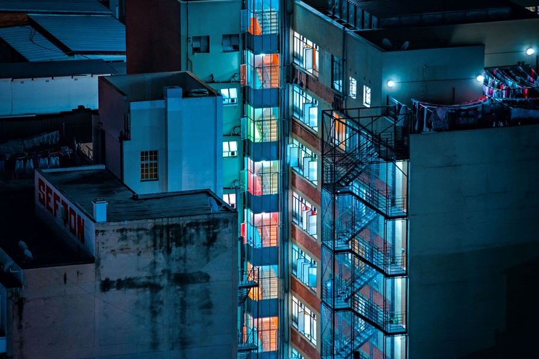
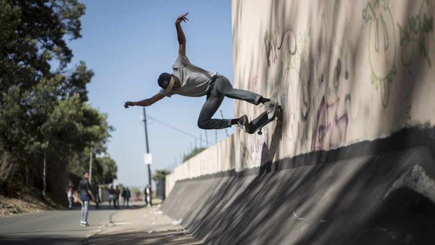
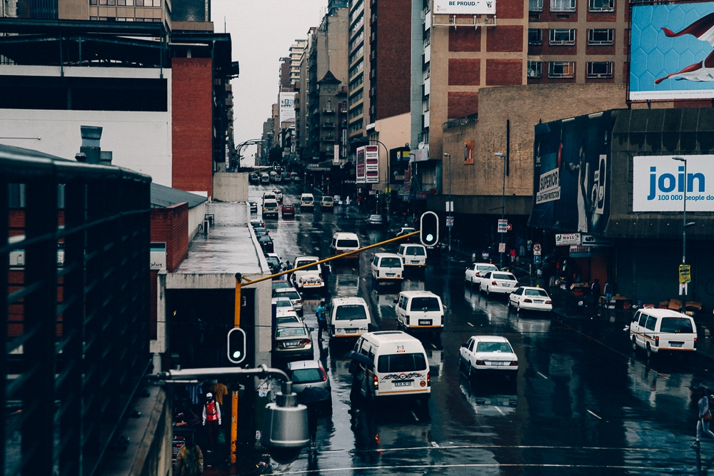
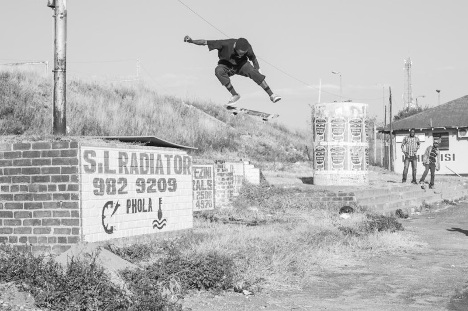

Photograph by Coral Amy Brown[1]

Photograph by Elsa Bleda[2]

Photograph by Jonathan Kyriakou[3]

Photograph by Austin Malema[4]

Photograph by Karabo Mooki[5]
References
[1] Coral Amy Brown, "Teaser: Watch How Skateboarding Is Changing the Lives of South African
Youth",https://medium.com/skateistan-johannesburg/teaser-watch-how-skateboarding-is-changing-the-lives-of-south-african-youth-5a406c16d3db,
Highsnobiety, 19/09/2016
[2] Elsa Bleda, Nas Hoosen, "Electric photos of a neon-lit Johannesburg at night",
https://www.dazeddigital.com/photography/article/35308/1/elsa-bleda-electric-photos-of-a-neon-lit-johannesburg-at-night,
Dazed, 18/04/2017
[3] Jonathan Kyriakou, "Jozi Days - An independent Skateboarding film",
https://www.youtube.com/watch?v=mLm74634n4k&feature=emb_title, 06/08/2016
[4] Austin Malema, Nontando Mposo, "Snaps of Joburg",
https://nontando58mposo.wordpress.com/tag/johannesburg/, 22/05/2015
[5] Karabo Mooki, Nikki Zakkas, "Meet the crews sparking a skate revolution across Africa",
https://10and5.com/2017/09/20/meet-the-crews-sparking-a-skate-revolution-across-africa/, 10and5,
20/09/2017

{kind=link}
{kind=link}
{kind=link}
{kind=link}